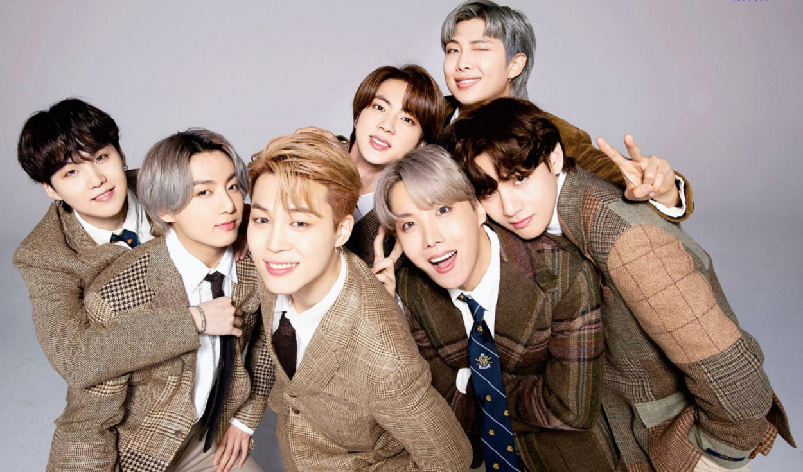

Baby Army/Old Army
"Army" es una palabra inglesa que quiere decir "Ejército", pero el nombre del fandom de BTS tiene otros significados. Las siglas A.R.M.Y. se forman con la frase también en inglés "Adorable Representative MC for Youth".

BangBangCon
Bang Bang Con Es el primer evento online promocionado como "Concierto desde tu hogar con BTS", siendo este una transmisión de conciertos previos del grupo a través de la plataforma YouTube en el canal del grupo "BANGTANTV". <3
Eras y evolución BTS
BTS debutaba el 13 de junio de 2013, hace ya casi seis años, y los siete chicos han conseguido hacerse con el título de boyband número uno a nivel mundial, durante todo este tiempo han crecido y evolucionado, personal tanto musicalmente, teniendo distintas eras que los caracterizan.
Rap Line o Vocal Line
En la agrupación de BTS, los 7 idols son los que componen sus propias canciones y aportan en las nuevas producciones que luego se convierten en un hit. Tanto la rap line como la vocal line unen sus voces para interpretar sus éxitos. Como en la mayoría de los grupos de k-pop, las bandas están compuestas por vocalistas y raperos. Además, suelen dividirse en secciones conocidas como la rap line y la vocal line.
Tu canción favorita y su significado
Para cada persona hay una canción favorita y cuando hablamos de la musica de BTS realmente hay una con la que nos identificamos, cuentanos sobre ti con tu canción favorita...